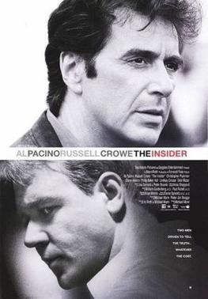

The Insider is a 1999 American drama film directed by Michael Mann, from a screenplay adapted by Eric Roth and Mann from Marie Brenner's 1996 Vanity Fair article "The Man Who Knew Too Much". It stars Al Pacino and Russell Crowe, with supporting actors including Christopher Plummer, Bruce McGill, Diane Venora and Michael Gambon.
A fictionalized account of a true story, it is based on the 60 Minutes segment about Jeffrey Wigand, a whistleblower in the tobacco industry,[2] covering his and CBS producer Lowell Bergman's struggles as they defend his testimony against efforts to discredit and suppress it by CBS and Wigand's former employer.
Though not a box office success, The Insider received acclaim from critics, who praised Crowe's portrayal of Wigand, and Mann's direction. It was nominated for seven Academy Awards, including Best Picture and Best Actor in a Leading Role (for Russell Crowe).
